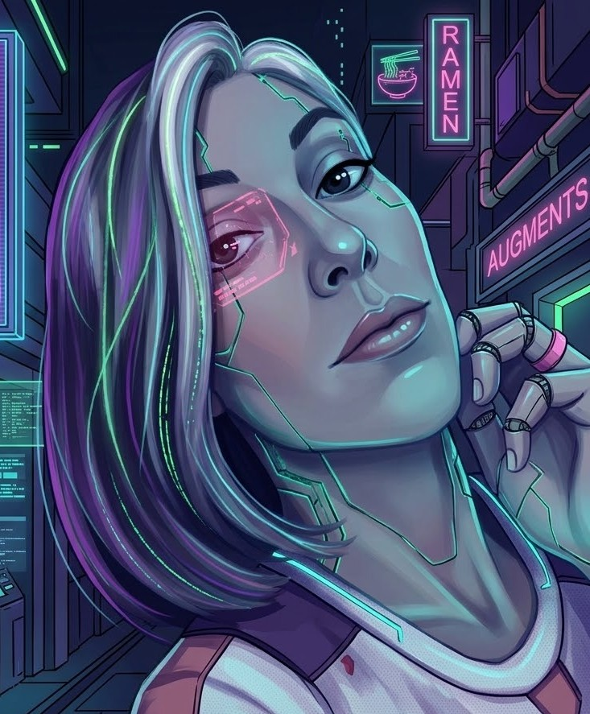

En la frontera entre dos reactivos es donde empieza nuestro proceso. No trabajamos sobre el lienzo convencional.
En nuestro taller nos adentramos en una exploración de lo que existe y lo que pudiera existir o haber existido. Te invitamos a adentrarte
en un tejido donde la intución estética, la filosofía y la física fundamental disuelven sus propios limites.
THE ACID LOOM
En la frontera entre dos reactivos es donde empieza nuestro proceso. No trabajamos sobre el lienzo convencional.
En nuestro taller nos adentramos en una exploración de lo que existe y lo que pudiera existir o haber existido. Te invitamos a adentrarte
en un tejido donde la intución estética, la filosofía y la física fundamental disuelven sus propios limites.
Haz Scroll
THE ACID LOOM
Quienes somos
The Acid Loom es un estudio que trabaja tanto con materia como con ideas. Si te interesa lo que hacemos contáctanos.
Fundador y propietario del estudio. Dirige la estrategia ejecutiva y la orientación artística y conceptual de las quimeras.

Diana Rodríguez Nistal
CMO & Técnico especialista
Lidera la comunicación de la marca y la estrategia comercial. Especialista en edición y acabados.
NOVEDADES & DIARIO DIGITAL
Bitácora
Lanzamiento•04 Nov, 2026
Rediseño vectorial y transiciones geométricas continuas
Implementamos algoritmos dinámicos de interpolación SVG para generar fracturas de grieta neón y divisiones de contenido en tiempo real.
Reflexión•01 Nov, 2026
El futuro de la experiencia web interactiva en 2027
Exploramos cómo el renderizado híbrido canvas-SVG sustituye a las transiciones estáticas tradicionales, dando paso a narrativas visuales reactivas al desplazamiento del usuario.
Innovación•28 Oct, 2026
Sincronización estética neón y sistemas de interfaz adaptativos
Analizamos la combinación de patrones oscuros de contraste alto con sombras de luz difusa neón para reducir la fatiga visual.
Comunicado•20 Oct, 2026
Actualización de rendimiento en capas vectoriales
Optimizamos los tiempos de cálculo de rutas SVG para mantener 60 FPS estables durante el desplazamiento en dispositivos móviles.
Los proyectos de Acid Loom
Quimeras
No es fácil acotar nuestro campo de trabajo, mejor te invitamos a adentrarte en lo que hacemos.
ECHOES OF THE FRACTAL MAZE
Echoes of the Fractal Maze
Representación interactiva de partículas gravitacionales en tiempo real.